|
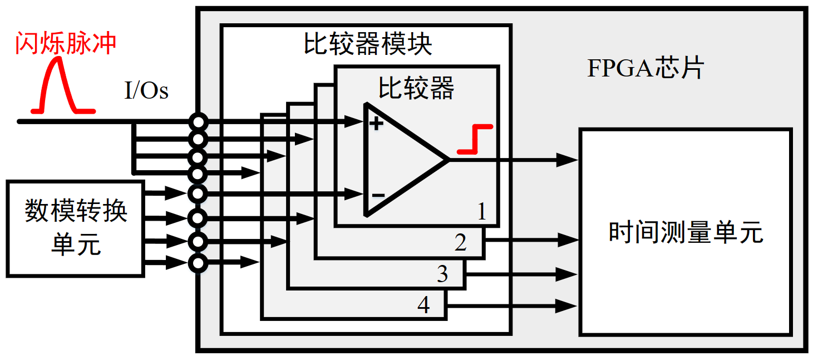
REMVT: A Resource-efficient Energy Characterization MethodREMVT improves upone convention MVT by reducing logic resources by at least up to 75% and increasing the energy characterization resolution. Project page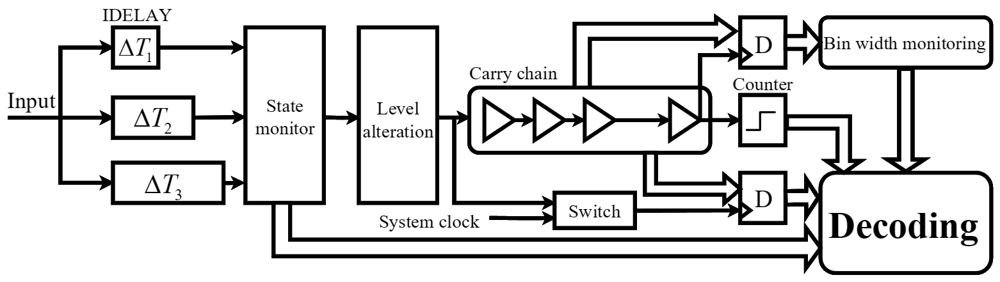
ToPo: A New TDC Architecture with A Two-Phase InterPolation ProcessToPo utilizes only 1/4 chain resources than conventional Tapped Delay Line (TDL) TDC, without introducing any increased dead time and even being less vulnerable to temperature fluctuations. The key technique of ToPo is a novel two-phase interpolation structure. In this structure, we utilize few temperature-invariant delay units to imprint timestamps along a single short chain. These delay units, acting like a ring oscillator, switch respective states along the short chain if a predefined time interval is triggered, leaving decodable landmarks. Meanwhile, since only 1/4 chain resources is needed, we can constrain all logic resources within a single logic array block, significantly mitigating the nonlinearity problem, especially the ultra-wide bins. Project page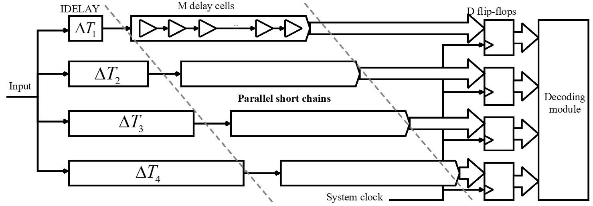
ParCha: A New Resource-efficient and Calibration-free TDC using Parallel Short ChainsParCha is a variant of low dead time Tapped Delay Line (TDL) TDC but we ``fold'' the long delay chain into several short parallel pieces. The key insight here is to reallocate the measurement range of each short piece by introducing appropriate fix delay, so that they can equivalently formulate a long chain. This can effectively minimize delay cell heterogeneity, thereby eliminating the reliance on tedious calibrations. Additionally, our design utilizes less temperature-sensitive resources but relies more on temperature-invariant modules so that our design can be more resilient to temperature fluctuations. Project page
Analog Peak Detection Using Purely FPGA SolutionsWe design an analog peak detection circuit using purely FPGA-only solutions. It is compact, flexible, and resource-efficient, which is appealing for multi-channel ultra-fasst signal acquisition. Project page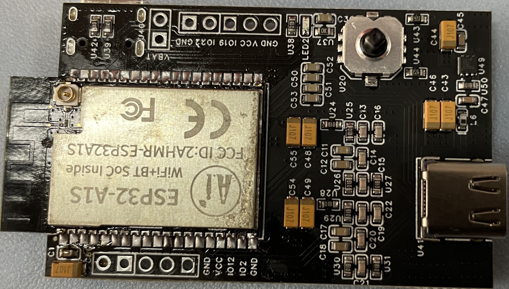
EarAce: Empowering Versatile Acoustic Sensing via Earable ActiveNoise Cancellation PlatformEarACE takes a compact design to handle hardware heterogeneity and to deliver flexible control on audio facilities. Leveraging a systematic study on in-ear acoustic signals, EarACE gains abilities to combat performance sensitivity to device wearing states and to eliminate body motion interference. Project page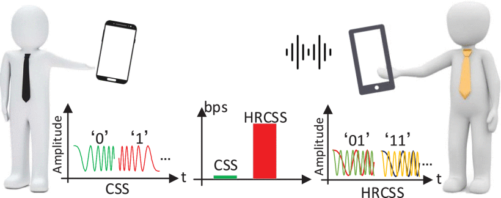
HRCSS: Boosting Chirp Signal Based Aerial Acoustic Communication Under Dynamic Channel ConditionsHRCSS innovates in the definition of a loose orthogonality condition, and it leverages this orthogonality to overlap multiple chirp carriers in a single time duration to form a data symbol representing multiple bits, thereby substantially promoting the data rate. Project page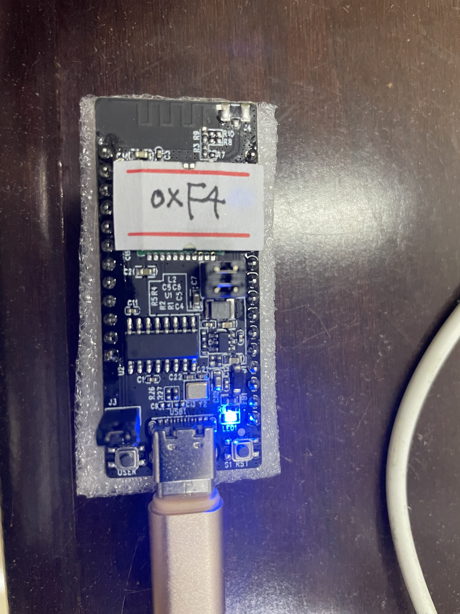
Unleashing the Power of Massive IoT Devices for WiFi SensingWe design the first Hi3861 IoT chipset and HUAWEI Harmony OS based WiFi sensing platform. Project page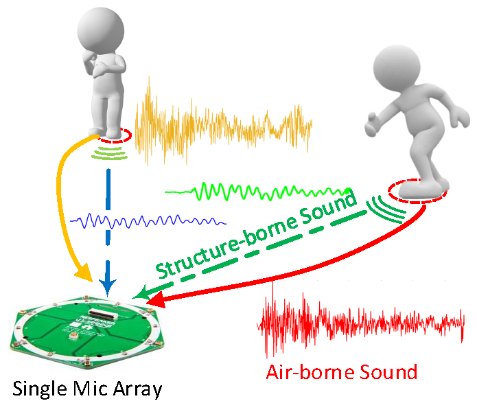
We Hear Your PACE: Passive Acoustic Localization of Multiple Walking PersonsWe design the first passive acoustic localization and tracking system. Project page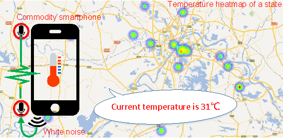
AcuTe: Acoustic Thermometer Empowered by a Single SmartphoneWe design a new algorithm that enables a single smartphone to sense ambient temperature. Project page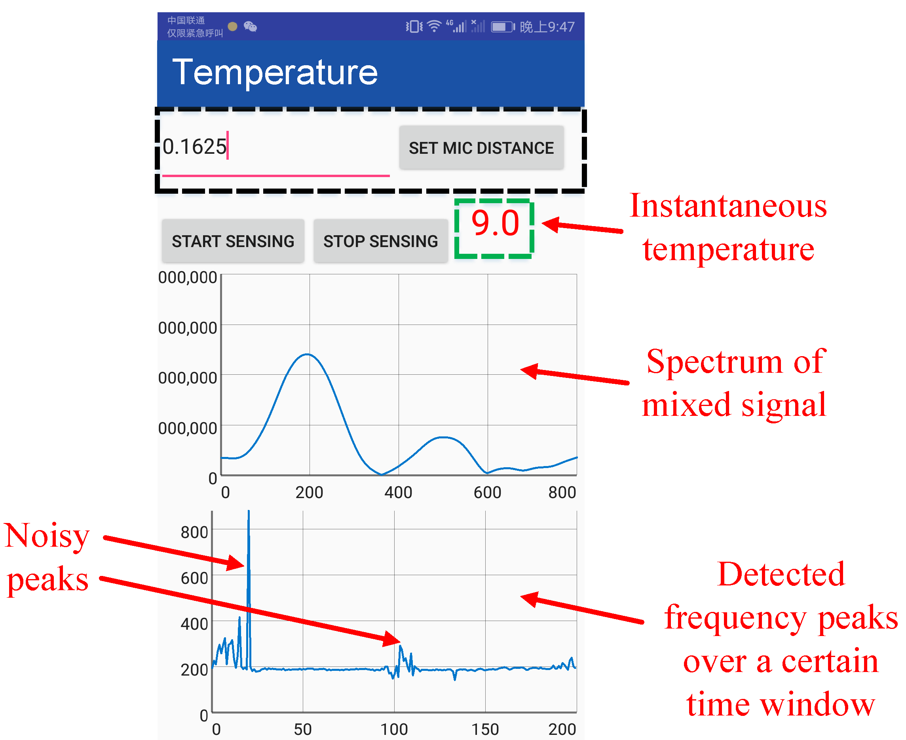
SST: Software Sonic Thermometer using Acoustic-enabled IoT DevicesOur algorithm can use the relationship between sound propagation speed and temperature for ambient temperature sensing. Project page
ASDP: Acoustic Software Defined Platform: A Versatile Communication and Sensing PlatformWe design a general benchmarking platform for acoustic communication and sensing. Project page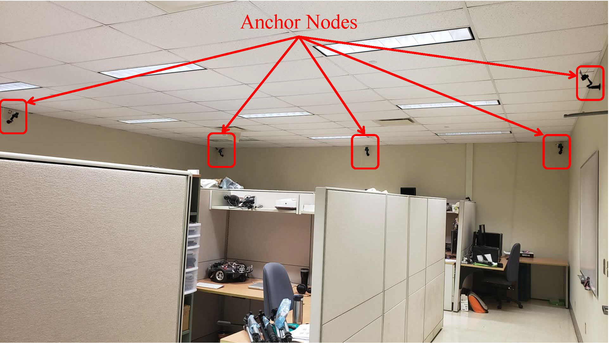
AALTS: Asynchronous Acoustic Indoor Localization and Tracking for Mobile TargetsWe design an asynchronous acoustic indoor localization system for target localization and tracking. Project page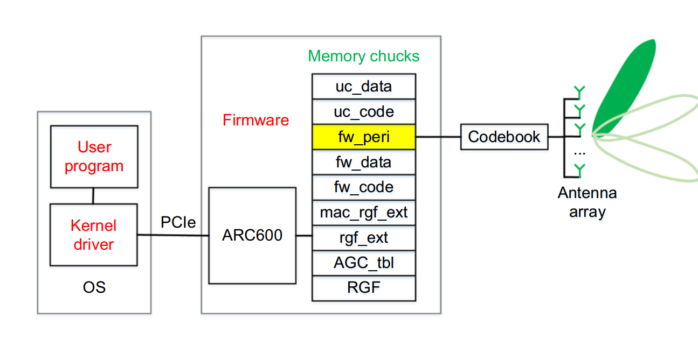
HackMan: Hacking MillimeterWave for a Measurement StudyWe design an online hacking tool for tuning the coeffients for antennas.
MotionBeep: Enabling Fitness Game for Collocated Players with Acoustic-enabled IoT DevicesMotionBeep enables precise ranging in long distance even in the presence of severe Doppler effect. Project page |